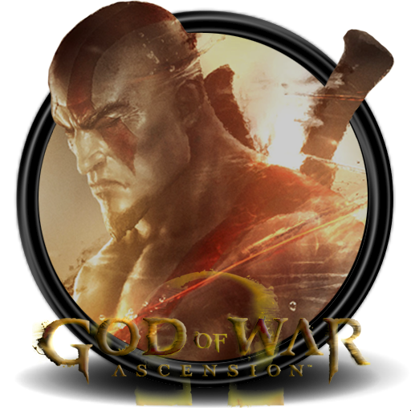
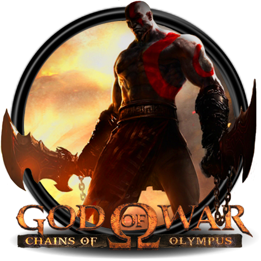
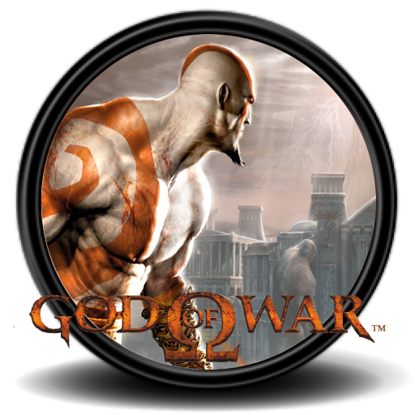
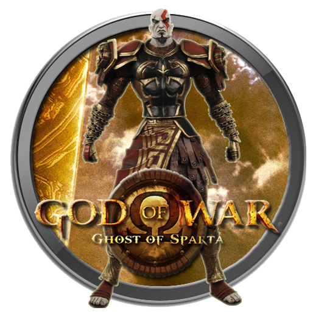
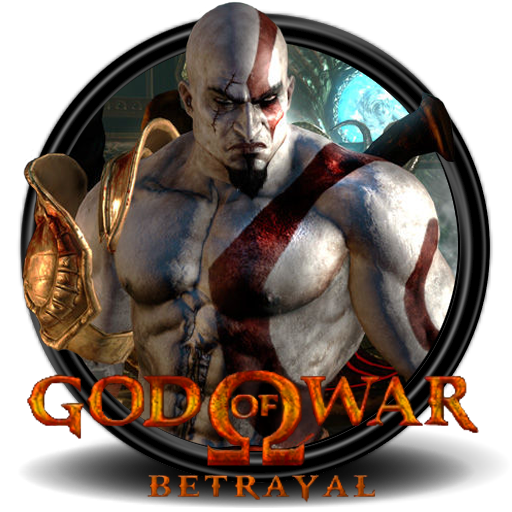
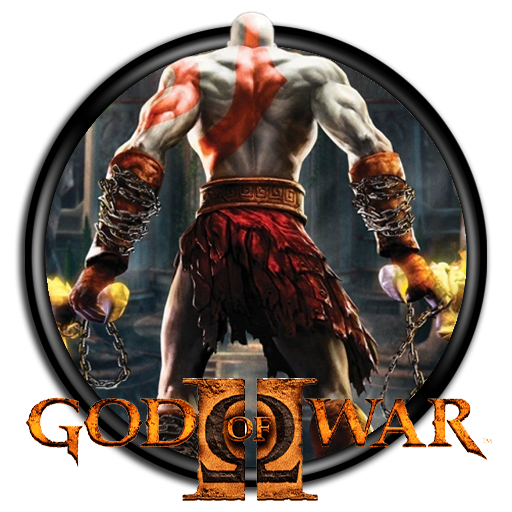
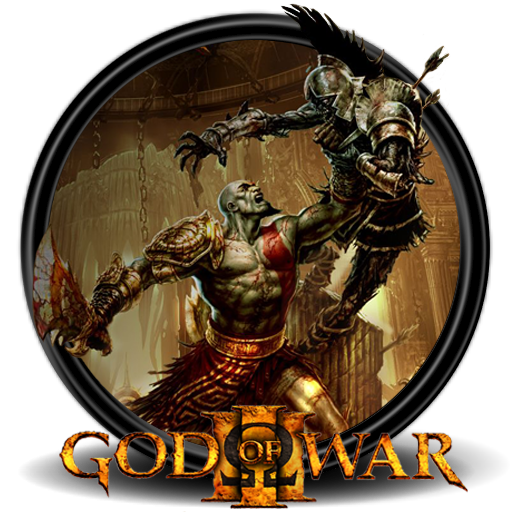
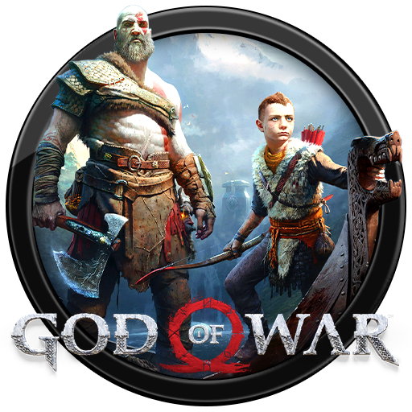

| Historia de la saga God of War | |
|---|---|
| (en orden cronológico) | |
|  |
God of War: Ascension Año: 2013 Plataforma: PS3 Los eventos de Ascension ocurren antes de God of War (2005), el primer videojuego de la franquicia. Nos sitúa en la Antigua Grecia, donde Kratos lleva una vida espartana junto a su familia, esposa e hija. Sin embargo, sus dotes como guerrero llaman la atención de Ares, dios de la Guerra. Vemos la historia que nos contaron: Kratos le pide ayuda, Ares le ayuda y más tarde le engaña para que mate a su familia. El resto de la aventura es un camino de venganza y sangre. |
|
God of War: Chains of Olympus Año: 2008 Plataforma: PSP Pese a toda la rabia de Kratos y su conexión con Ares, el espartano se resigna a vivir como esclavo de los dioses con la esperanza de que finalmente sea liberado. Pasan 5 años hasta que se da cuenta de que no va a ocurrir. Ve una oportunidad de redención en Chains of Olympus al enterarse de una conspiración en el Inframundo, así que viaja al reino de Hades para buscar al desaparecido dios Helios. El dios de los sueños parece estar detrás de todo este entuerto. |  |
|  |
God of War Año: 2005 Plataforma: PS2 El primer videojuego de la saga, que supuso el pistoletazo de salida para una aventura de venganza, violencia y sangre que se extiende a nuestros días. Kratos lleva 10 años siendo esclavo de los dioses y finalmente encuentra su oportunidad para vengarse de Ares. El espartano se embarca en una aventura en busca de un poder perdido que le permita matar al responsable de su sufrimiento. |
|
God of War: Ghost of Sparta Año: 2010 Plataforma: PSP Otra entrega de God of War para la consola portátil de PlayStation. God of War: Ghost of Sparta es un videojuego muy importante a nivel narrativo para la franquicia. Se sitúa después de God of War (2005). Seguimos a Kratos como dios en una aventura para encontrar a su hermano Deimos, que hasta ahora creía muerto. Según rumores, podría estar vivo. Las respuestas conducen a Kratos hasta Atlantis. |  |
|  |
God of War: Betrayal Año: 2007 Plataforma: móviles God of War se mudó a la plataforma de móviles para entregar Betrayal, que nos sitúa después de los eventos de God of War (2005). En esta ocasión, Kratos da rienda suelta a sus ansias de guerra, liderando al ejército espartano como un dios. Zeus le advierte que debe abandonar su campaña, pero Kratos se niega y de paso mata al mensajero que porta la última advertencia, Ceryx. Este es el comienzo del enfrentamiento general de Kratos con el resto de dioses del olimpo. |
|
God of War II Año: 2007 Plataforma: PS2 Kratos, dios de la guerra, continúa su campaña de guerra, sangre y destrucción haciendo caso omiso de las advertencias de Zeus y beneficiando al pueblo espartano por encima del resto. Lleva 13 años siendo el dios de la guerra. Atenea, única diosa con la que Kratos entabla una relación de afecto, le ruega que detenga su campaña o toda la furia del olimpo caerá sobre él. La diosa trata de frenarlo sin causarle dolor, pero finalmente Zeus se ve obligado a intervenir y frena a Kratos... ¿Pero cuándo algo ha parado al espartano? Comienza la campaña de Kratos para eliminar a TODO el olimpo. |  |
|  |
God of War III Año: 2010 Plataforma: PS3 Kratos no está para tonterías. God of War III comienza pocos segundos después del final de God of War II. Kratos se une a los titanes, enemigos naturales de los dioses, para asaltar el olimpo. Kratos clama venganza y busca matar a todos y cada uno de los dioses, incluido el mismísimo Zeus. Es el videojuego más sangriento, violento y dramático de la saga. Pone fin a la etapa olímpica de Kratos. |
|
God of War Año: 2018 Plataforma: PS4, PS5 y PC Han pasado muchos años desde God of War III. Kratos deja completamente devastado el reino griego. Moribundo, decide refugiarse en el reino nórdico. Oculta su naturaleza, encuentra una esposa (Faye) y tiene un hijo (Atreus). Sin embargo, el sabio Odín se percata de su presencia y envía a su hijo Baldur a tantear el terreno. El conflicto con los dioses nórdicos es inevitable y Atreus empieza a conocer la naturaleza de su padre. |  |
 |
God of War: Ragnarök Año: 2022 Plataforma: PS4 y PS5 God of War Ragnarök tiene lugar poco después de God of War (2018). El Fimbulwinter ha llegado, lo que indica la inexorable llegada del Ragnarök. La guerra contra los dioses nórdicos es inminente. Odín no está contento y saca la artillería pesada: visita a Kratos y a Atreus junto a Thor. Por otro lado, Freyja busca enfrentarse al espartano pese a su negativa. Esta aventura se divide en diferentes historias: el Ragnarök, Atreus en su búsqueda de identidad, la guerra contra Odín y la historia de Freyja. Se forjarán alianzas y correrá la sangre de los dioses. |
|
¿Y qué hay más allá? Ciertos detalles del final de God of War Ragnarök y un cómic oficial señalan que el destino de Kratos se encuentra en Egipto. Según las teorías, antes de llegar al reino nórdico, Kratos se cruzó con un dios egipcio que le habló del destino. Además, podemos ver más sobre el conflicto de Kratos con el espíritu de Atenea... que sigue atormentándolo a través de las Espadas del Caos. |
|